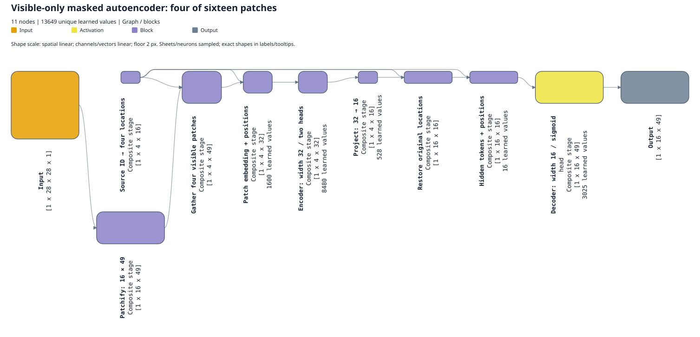
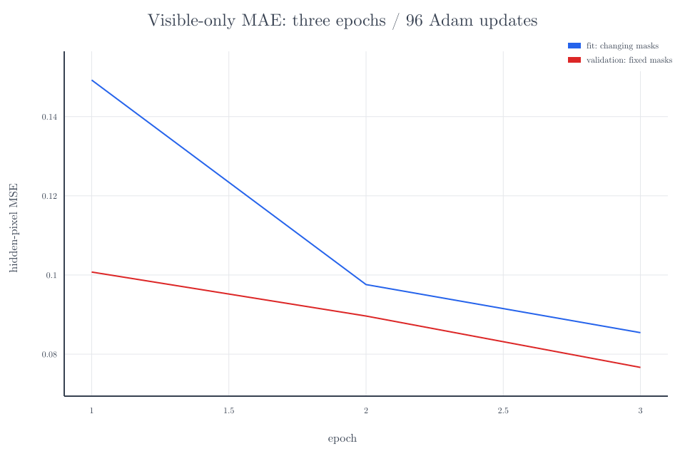
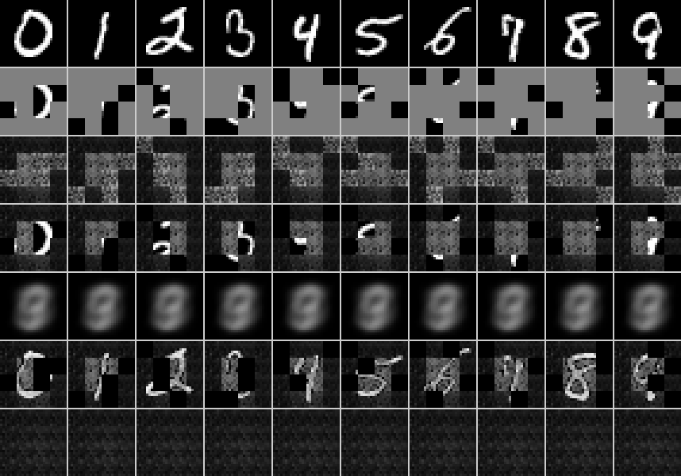
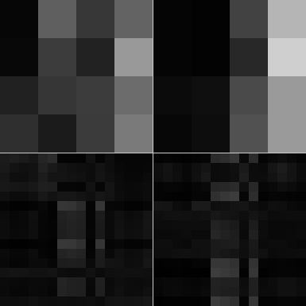

Masked Autoencoders: Learn from Four Visible Patches
Abstract
A masked autoencoder predicts missing image patches from a small visible subset. This report splits each MNIST image into sixteen 7-by-7 patches, sends four to a width-32 transformer, and restores all sixteen locations in a smaller width-16 mask-token decoder. It derives the selector algebra, hidden-only pixel objective and invariance to visible-token order, then runs the original 13,649-parameter model for three epochs with explicit Adam updates. Checkpoint restoration, target-free decoding and hidden-input perturbations verify the information path. The short run gives hidden-pixel test MSE 0.07935, above the fitting-mean baseline 0.06786, and changes little when visible content is misaligned. These controls qualify what the code has captured.
What reaches the encoder
This is a small raw-pixel adaptation of [He et al.'s masked autoencoder](https://arxiv.org/abs/2111.06377), not an ImageNet reproduction or a transfer-learning benchmark. There is one pre-norm transformer block in each half, two attention heads, a tanh-GELU feed-forward network of twice the block width, and no CLS token, dropout or causal mask. The encoder receives *four visible tokens*; the decoder receives sixteen locations, including twelve learned mask tokens. A sigmoid head predicts raw [0,1] pixels, without per-patch target normalization.
#include <dm/dm.hpp>
int main() {
std::filesystem::create_directories("build");
dm::graphics::Diagram d(53, 1100);
d.node("x", {0, 0}, "Clean image\n16 patches × 49 pixels")
.node("s", {6, -3}, "Detached selector S\nFour locations from source ID")
.node("v", {6, 0}, "Gather visible patches\nFour tokens only")
.node("e", {12, 0}, "Encoder width 32\nFour positioned tokens")
.node("r", {12, -3}, "Project and restore locations\n12 learned mask tokens")
.node("d", {6, -6}, "Decoder width 16\n16 positioned tokens")
.node("l", {0, -6}, "Hidden-pixel MSE\n12 patches per image")
.edge("x", "v")
.edge("s", "v")
.edge("v", "e")
.edge("e", "r")
.edge("s", "r")
.edge("r", "d")
.edge("d", "l")
.edge("x", "l")
.save_svg("build/masked_method.svg");
}
Let \(X_b\in\mathbb R^{16\times49}\) be image b in patch order and \(S_b\in\{0,1\}^{4\times16}\) contain four distinct one-hot rows. Then \(S_bS_b^\top=I_4\), \(S_b^\top S_b\) is a diagonal visible-location indicator, and \(m_b=\mathbf1-S_b^\top\mathbf1_4\) marks the twelve hidden patches. With fixed position tables \(P_{32},P_{16}\), shared patch projection E and decoder projection D,
The mask token t is learned and shared across hidden locations. Decoder positions distinguish
those locations. models::MaeSelection preserves the source's wrapping 32-bit ID/epoch/seed
hashes and stable patch-index tie rule. It does not use global RNG state or assert uniformly
random subsets. Training changes the epoch key; validation and test keep epoch zero and seed
- Source IDs determine masks, not targets or labels. Selectors are detached discrete data.
The API rejects duplicate, soft, missing and gradient-enabled selector rows before creating parameters, rather than silently interpreting them as different models.
A patch map and a hand-checkable loss
For patch p and within-patch element q, the flat image location is \((7\lfloor p/4\rfloor+\lfloor q/7\rfloor)28+7(p\bmod4)+(q\bmod7)\). Patch 5 starts at pixel 203. The four coloured patches below are an illustrative diagonal selection; training uses the hashed masks. An arange image checks all 784 mappings and the inverse. The inverse is differentiable, so summing its pixels gives gradient one everywhere.
The general masked loss supports a smaller hand example with four two-pixel patches. With predictions all 0.2, targets [(0.1,0.2),(0.3,0.4),(0.5,0.6),(0.7,0.8)] and hidden mask [0,1,0,1], only four residuals contribute: (0.01+0.04+0.25+0.36)/4 = 0.165. Their prediction derivatives are −0.05, −0.10, −0.25 and −0.30; the other four derivatives are zero.
#include <dm/dm.hpp>
int main() {
namespace n = dm::nn;
const auto type = n::DType::Float64;
const auto image = n::arange(0, 784, 1, type).reshape({1, 28, 28, 1}).requires_grad_();
const auto patches = n::models::MaePatches(image);
if (n::max(n::abs(n::models::MaeImage(patches) - image.reshape({1, 784}))).item() != 0 ||
n::max(n::abs(n::grad(n::sum(n::models::MaeImage(patches)), {image})[0] - 1.)).item() != 0)
return 1;
const auto pred = n::full({1, 4, 2}, .2, type).requires_grad_();
const auto target = n::tensor({.1, .2, .3, .4, .5, .6, .7, .8}, {1, 4, 2}, type);
const auto mask = n::tensor({0., 1., 0., 1.}, {1, 4}, type);
const auto loss = n::models::MaeLoss(pred, target, mask);
const auto gradient = n::grad(loss, {pred})[0];
const auto expected = n::tensor({0., 0., -.05, -.1, 0., 0., -.25, -.3}, {1, 4, 2}, type);
if (std::abs(loss.item() - .165) > 1e-14 || n::max(n::abs(gradient - expected)).item() > 1e-14)
return 1;
std::print(
"Toy loss {:.3f}; gradients {}. All 784 patch mappings and inverse derivatives pass.\n",
loss.item(),
gradient.values_str());
std::filesystem::create_directories("build");
dm::graphics::Diagram d(52, 900);
for (int p = 0; p < 16; ++p) {
dm::graphics::DiagramNodeStyle style;
style.fill = (p % 5 == 0) ? dm::graphics::RGB{191, 219, 254} : dm::graphics::RGB{241, 245, 249};
d.node(
std::to_string(p),
{4.5 * (p % 4), -2.2 * (p / 4)},
std::format("Patch {}\nFirst pixel {}", p, n::models::MaePixel(p, 0)),
style);
}
d.save_svg("build/masked_patches.svg");
}Toy loss 0.165; gradients [[[0, 0], [-0.05, -0.1], [-0, -0], [-0.25, -0.3]]]. All 784 patch mappings and inverse derivatives pass.

For the actual patch arrays, the objective and its continuous derivatives are
Targets retain continuous gradients if requested. There is no gradient through mask choices. Finite inputs matter: multiplying an invalid NaN by zero does not sanitize it. The model validates finite images/codes; the generic loss propagates nonfinite continuous arithmetic. For the source fixture, 2 images × 12 hidden patches × 49 pixels gives 1,176 scored pixels, loss 0.16 and each hidden prediction derivative −0.8/1176. All 392 visible derivatives are exactly zero, and changing visible predictions leaves the loss unchanged. This checks every one of the 1,568 derivatives.
#include <dm/dm.hpp>
int main() {
namespace n = dm::nn;
std::vector<float> weights(32);
for (int b = 0; b < 2; ++b)
for (int p = 0; p < 16; ++p)
weights[b * 16 + p] = p < 4 ? 0.f : 1.f;
const auto mask = n::from_vector(weights, {2, 16}), target = n::full({2, 16, 49}, .7);
const auto prediction = n::full({2, 16, 49}, .3).requires_grad_();
const auto loss = n::models::MaeLoss(prediction, target, mask);
const auto gradients = n::grad(loss, {prediction})[0].to_vector<float>();
if (std::abs(loss.item() - .16) > 3e-7)
return 1;
auto changed = prediction.to_vector<float>();
for (int i = 0; i < 1568; ++i) {
const bool hidden = (i / 49) % 16 >= 4;
if (std::abs(gradients[i] - (hidden ? -.8 / 1176 : 0)) > 2e-10)
return 1;
if (!hidden)
changed[i] = .99f;
}
if (n::models::MaeLoss(n::from_vector(changed, {2, 16, 49}), target, mask).item() != loss.item())
return 1;
std::print(
"Loss {:.8f}; 1176 hidden derivatives checked; 392 visible derivatives exactly zero.\n",
loss.item());
}Loss 0.15999998; 1176 hidden derivatives checked; 392 visible derivatives exactly zero.
The executed transformer
Each block applies pre-norm two-head attention, a residual, pre-norm width→2width→width tanh-GELU feed-forward layers and another residual. A final LayerNorm follows each block. LayerNorm epsilon is 1e-5. Q, K, V and attention output projections have no biases; patch, feed-forward, decoder and prediction projections do. Fixed positions group row sine, row cosine, column sine and column cosine coordinates. For each axis and k=0,…,width/4−1, the angle is \(coordinate\times10000^{-2k/(width/2)}\). They are not learned parameters.
For two heads, width w and token count T, attention uses \(\operatorname{softmax}(QK^\top/\sqrt{w/2})V\) independently per head. The encoder has T=4, w=32, hence sixteen attention entries per head. A full sixteen-token encoder would have 256 per head: sixteen times as many score entries. This is an attention-matrix comparison, not a measured speedup of the whole model. Dense projections and feed-forward work also remain; the decoder still attends over sixteen tokens at width 16.
The shape probe below executes all branches for one image. A separate source-ID branch produces the detached selector; its declared drawing dependency adds no autograd path. Block boundaries retain selector inputs at gathering, selected positions, location restoration and hidden tokens. Graph detail uses shared linear shape scales, a two-pixel minimum extent, at most six planes and eight sampled neurons; exact shapes remain in labels. Horizontal scrolling preserves legibility.
#include <dm/dm.hpp>
int main() {
namespace n = dm::nn;
n::ParameterStore p(1877);
const auto ids = n::zeros({1}, n::DType::Int32);
n::Module model(
[&](const n::Tensor& image) {
const auto selector = n::models::MaeSelection(ids);
const auto net = n::models::MaskedAutoencoder(p, image, selector);
n::model_stage("Source ID → four locations", ids, selector);
n::model_stage("Patchify: 16 × 49", image, net.patches);
n::model_stage(
"Gather four visible patches",
std::vector<n::Tensor>{net.patches, selector},
net.visible);
n::model_stage(
"Patch embedding + positions",
std::vector<n::Tensor>{net.visible, selector},
net.encoder_input);
n::model_stage("Encoder: width 32 / two heads", net.encoder_input, net.code);
n::model_stage("Project: 32 → 16", net.code, net.projected);
n::model_stage(
"Restore original locations",
std::vector<n::Tensor>{net.projected, selector},
net.restored);
n::model_stage(
"Hidden tokens + positions",
std::vector<n::Tensor>{net.restored, selector},
net.decoder_input);
return n::model_stage(
"Decoder: width 16 / sigmoid head", net.decoder_input, net.prediction);
},
"Visible-only masked autoencoder: four of sixteen patches");
n::ModelPlotOptions options;
options.style = n::ModelPlotStyle::Graph;
options.detail = n::ModelPlotDetail::Blocks;
options.max_neurons = 8;
options.sizing.spatial_scale = n::ModelPlotScale::Linear;
options.sizing.channel_scale = n::ModelPlotScale::Linear;
options.sizing.minimum_extent = 2;
options.sizing.max_planes = 6;
const auto figure = model.plot(n::zeros({1, 28, 28, 1}), options);
if (p.size() != 35 || p.count() != 13649 || figure.parameter_count() != 13649)
return 1;
std::filesystem::create_directories("build");
figure.save_svg("build/masked_architecture.svg");
std::print(
"{} learned tensors; {} learned scalars.\n\n| parameter | scalars |\n|---|---:|\n",
p.size(),
p.count());
for (const auto& name : p.names())
std::print("| {} | {} |\n", name, p.at(name).numel());
}35 learned tensors; 13649 learned scalars.
| parameter | scalars |
|---|---|
| patch/W | 1568 |
| patch/b | 32 |
| encoder/ln1/gamma | 32 |
| encoder/ln1/beta | 32 |
| encoder/attention/Wq | 1024 |
| encoder/attention/Wk | 1024 |
| encoder/attention/Wv | 1024 |
| encoder/attention/Wo | 1024 |
| encoder/ln2/gamma | 32 |
| encoder/ln2/beta | 32 |
| encoder/ff1/W | 2048 |
| encoder/ff1/b | 64 |
| encoder/ff2/W | 2048 |
| encoder/ff2/b | 32 |
| encoder/norm/gamma | 32 |
| encoder/norm/beta | 32 |
| decoder_projection/W | 512 |
| decoder_projection/b | 16 |
| mask_token | 16 |
| decoder/ln1/gamma | 16 |
| decoder/ln1/beta | 16 |
| decoder/attention/Wq | 256 |
| decoder/attention/Wk | 256 |
| decoder/attention/Wv | 256 |
| decoder/attention/Wo | 256 |
| decoder/ln2/gamma | 16 |
| decoder/ln2/beta | 16 |
| decoder/ff1/W | 512 |
| decoder/ff1/b | 32 |
| decoder/ff2/W | 512 |
| decoder/ff2/b | 16 |
| decoder/norm/gamma | 16 |
| decoder/norm/beta | 16 |
| prediction/W | 784 |
| prediction/b | 49 |

For width w, the attention matrices contribute 4w², the two feed-forward matrices 4w², feed-forward biases 3w, and three LayerNorms (including the final norm) 6w. Thus each block/final-norm group has 8w²+9w scalars: 8,480 for the encoder and 2,192 for the decoder. Patch embedding adds 1,600, decoder projection 528, mask token 16 and prediction head 833: 1,600 + 8,480 + 528 + 16 + 2,192 + 833 = 13,649.
Genuine MNIST and source provenance
The canonical dataset preparation loads the original balanced pools: 1,000 fitting, 200 validation and 200 test images, Float32 [N,28,28,1] in [0,1]. Fitting and validation use disjoint official training IDs; held-out records come from the official test split. The provenance manifest and all source IDs are retained. Labels select gallery columns only.
#include <dm/dm.hpp>
int main() {
namespace n = dm::nn;
std::filesystem::create_directories("build");
const std::filesystem::path cache = dm::datasets::data_home();
dm::datasets::prepare_example_data("mnist-assets", cache.string());
const auto pools = n::models::LoadSaliency(cache / "saliency");
n::NamedTensors data;
std::print("| pool | images | per digit | hidden pixels per image |\n|---|---:|---:|---:|\n");
for (int split = 0; split < 3; ++split) {
const std::string name = split == 0 ? "fit" : split == 1 ? "validation" : "test";
data.emplace_back(name + "_images", pools[split].images);
data.emplace_back(name + "_source_ids", pools[split].source);
data.emplace_back(name + "_labels", pools[split].labels);
std::print(
"| {} | {} | {} | 588 |\n",
name,
pools[split].images.size(0),
pools[split].images.size(0) / 10);
}
n::save_npz("build/masked_data.npz", data);
std::filesystem::copy_file(
cache / "saliency" / "manifest.json",
"build/masked_data_manifest.json",
std::filesystem::copy_options::overwrite_existing);
}| pool | images | per digit | hidden pixels per image |
|---|---|---|---|
| fit | 1000 | 100 | 588 |
| validation | 200 | 20 | 588 |
| test | 200 | 20 | 588 |
Ninety-six explicit Adam updates
The source seed 1877 initializes all 35 parameter tensors. Adam uses learning rate 0.003, β1=0.9, β2=0.999 and epsilon 1e-8. Batch size 32 and order seed 1889 give 32 updates per epoch, including a final batch of eight. All 1,000 records appear once per epoch. Each epoch changes source-ID masks; checkpoint selection uses fixed validation masks and Float64 accumulation of Float32 predictions. Test pixels do not select an epoch. Fitting losses are pre-update batch means; validation uses post-epoch weights. All first gradients, initial weights/outputs, first-update weights, epoch weights/masks and selected weights are saved for verification. The model components perform no optimization; the entire loop is below.
#include <dm/dm.hpp>
int main() {
namespace n = dm::nn;
std::map<std::string, n::Tensor> data;
for (const auto& [name, value] : n::load_npz("build/masked_data.npz"))
data.emplace(name, value);
const auto fit = data.at("fit_images"), validation = data.at("validation_images"),
test = data.at("test_images");
n::ParameterStore p(1877);
{
n::NoGradGuard guard;
std::vector<float> first(64);
for (int i = 0; i < 4; ++i)
first[i * 16 + i] = 1;
n::models::MaskedAutoencoder(p, n::zeros({1, 28, 28, 1}), n::from_vector(first, {1, 4, 16}));
p.save("build/masked_initial.npz");
const auto initial =
n::models::MaskedAutoencoder(p, test, n::models::MaeSelection(data.at("test_source_ids")));
n::save_npz(
"build/masked_initial_outputs.npz",
{{"code", initial.code}, {"prediction", initial.prediction}});
}
n::OptimizerConfig config;
config.kind = n::OptimizerKind::Adam;
n::Optimizer optimizer(p, .003, config);
n::BatchOrder order(1000, 32, 1889);
const auto validation_selection = n::models::MaeSelection(data.at("validation_source_ids"));
double best = std::numeric_limits<double>::infinity();
int selected = 0, updates = 0;
std::ofstream batches("build/masked_batches.tsv");
batches << "epoch\tstep\trow\tsource_id\n";
const auto source = data.at("fit_source_ids").to_vector<int>();
std::vector<double> epochs, train, valid;
std::print(
"| epoch | fitting pre-update masked MSE | validation masked MSE |\n|---:|---:|---:|\n");
for (int epoch = 1; epoch <= 3; ++epoch) {
order.begin_epoch();
const auto all_masks = n::models::MaeSelection(data.at("fit_source_ids"), epoch);
n::save_npz(
"build/masked_epoch" + std::to_string(epoch) + "_mask.npz", {{"selection", all_masks}});
double total = 0;
int seen = 0;
for (;;) {
const auto rows = order.next();
if (rows.empty())
break;
const auto images = n::take_rows(fit, rows), selection = n::take_rows(all_masks, rows);
const auto net = n::models::MaskedAutoencoder(p, images, selection);
const auto loss = n::models::MaeLoss(net.prediction, net.patches, net.mask);
if (updates == 0) {
n::GradOptions keep;
keep.retain_graph = true;
const auto gradients = n::grad(loss, p.parameters(), keep);
n::NamedTensors saved;
for (std::size_t i = 0; i < gradients.size(); ++i) {
const auto norm = n::sqrt(n::sum(n::square(gradients[i]))).item();
if (!std::isfinite(norm) || norm <= 0)
return 1;
saved.emplace_back(p.names()[i], gradients[i]);
}
n::save_npz("build/masked_first_gradients.npz", saved);
n::save_npz("build/masked_first_batch.npz", {{"images", images}, {"selection", selection}});
}
const double value = loss.item();
if (!std::isfinite(value) || value < 0)
return 1;
optimizer.minimize(loss);
total += rows.size() * value;
seen += int(rows.size());
for (auto row : rows)
batches << epoch << '\t' << updates << '\t' << row << '\t' << source[row] << '\n';
if (updates == 0)
p.save("build/masked_first_update.npz");
++updates;
}
n::NoGradGuard guard;
const auto net = n::models::MaskedAutoencoder(p, validation, validation_selection);
const double score = n::models::MaeLoss(
n::cast(net.prediction, n::DType::Float64),
n::cast(net.patches, n::DType::Float64),
n::cast(net.mask, n::DType::Float64))
.item();
if (seen != 1000 || !std::isfinite(score))
return 1;
p.save("build/masked_epoch" + std::to_string(epoch) + ".npz");
if (score < best) {
best = score;
selected = epoch;
p.save("build/masked_best.npz");
}
epochs.push_back(epoch);
train.push_back(total / seen);
valid.push_back(score);
std::print("| {} | {:.9f} | {:.9f} |\n", epoch, total / seen, score);
}
if (updates != 96 || !batches)
return 1;
n::save_npz(
"build/masked_selection.npz",
{{"epoch", n::full({}, selected, n::DType::Int32)},
{"validation_mse", n::full({}, best, n::DType::Float64)},
{"epochs", n::from_vector(epochs, {3})},
{"fit_mse", n::from_vector(train, {3})},
{"validation_path", n::from_vector(valid, {3})}});
dm::graphics::RPlot::create()
.lines(epochs, train, "fit: changing masks", {37, 99, 235}, 2.)
.lines(epochs, valid, "validation: fixed masks", {220, 38, 38}, 2.)
.x_label("epoch")
.y_label("hidden-pixel MSE")
.title("Visible-only MAE: three epochs / 96 Adam updates")
.save_svg("build/masked_learning.svg");
std::print(
"Selected epoch {}; {} updates; every first parameter gradient finite and nonzero.\n",
selected,
updates);
}| epoch | fitting pre-update masked MSE | validation masked MSE |
|---|---|---|
| 1 | 0.149243645 | 0.100740956 |
| 2 | 0.097578129 | 0.089629951 |
| 3 | 0.085430081 | 0.076652002 |
Selected epoch 3; 96 updates; every first parameter gradient finite and nonzero.

Decoder controls and information-path checks
A fresh store restores the selected weights, then evaluates all three pools. Standalone decoding accepts only four codes and their selector, without images or targets. Repeated and standalone predictions must agree exactly; a single record must agree with its batch prediction within 2e-6. The controls then (1) replace all hidden input pixels by 1−x, (2) cyclically shift entire images while retaining each target's selector, (3) zero the codes, (4) use seed 1913 for a second mask, and (5) reverse the four selector rows. Weights remain unchanged throughout.
Hidden-input independence follows directly: if \(S_b\Delta_b=0\), then \(S_b(X_b+\Delta_b)=S_bX_b\), so codes and predictions are unchanged. The clean targets can still change the measured loss. For a four-row permutation R, set S′=RS. Selected patches and positions both become R times their originals. Shared tokenwise maps and unmasked self-attention are permutation-equivariant, hence Z′=RZ and \(S'^\top D(Z')=S^\top D(Z)\). Restored predictions are therefore invariant in exact arithmetic. The test allows Float32 roundoff; it does not assume that changing which locations are visible leaves the prediction invariant.
#include <dm/dm.hpp>
int main() {
namespace n = dm::nn;
std::map<std::string, n::Tensor> data;
for (const auto& [name, value] : n::load_npz("build/masked_data.npz"))
data.emplace(name, value);
n::ParameterStore p(1877);
p.load("build/masked_best.npz", false);
const auto before = p.flatten();
n::NoGradGuard guard;
const auto images = data.at("test_images"),
selection = n::models::MaeSelection(data.at("test_source_ids"));
const auto net = n::models::MaskedAutoencoder(p, images, selection),
repeat = n::models::MaskedAutoencoder(p, images, selection);
const auto decoded = n::models::MaeDecode(p, net.code, selection);
if (n::max(n::abs(net.prediction - repeat.prediction)).item() != 0 ||
n::max(n::abs(net.prediction - decoded.prediction)).item() != 0)
return 1;
n::NamedTensors saved;
for (const auto& name : {"fit", "validation", "test"}) {
const auto s = n::models::MaeSelection(data.at(std::string(name) + "_source_ids"));
const auto out = n::models::MaskedAutoencoder(p, data.at(std::string(name) + "_images"), s);
saved.emplace_back(std::string(name) + "_code", out.code);
saved.emplace_back(std::string(name) + "_prediction", out.prediction);
saved.emplace_back(std::string(name) + "_selection", s);
}
const auto hidden = n::broadcast_to(n::expand_dims(net.mask, 2), {200, 16, 49});
const auto altered =
n::models::MaeImage(net.patches * (1. - hidden) + (1. - net.patches) * hidden)
.reshape(images.shape());
const auto perturbed = n::models::MaskedAutoencoder(p, altered, selection);
if (n::max(n::abs(perturbed.code - net.code)).item() != 0 ||
n::max(n::abs(perturbed.prediction - net.prediction)).item() != 0)
return 1;
const auto shifted_images =
n::concat({n::slice_axis(images, 0, 1, 200), n::slice_axis(images, 0, 0, 1)}, 0);
const auto shuffled = n::models::MaskedAutoencoder(p, shifted_images, selection);
const auto zero = n::models::MaeDecode(p, n::zeros({200, 4, 32}), selection);
const auto second_selection = n::models::MaeSelection(data.at("test_source_ids"), 0, 1913);
const auto second = n::models::MaskedAutoencoder(p, images, second_selection);
const auto permuted_selection = n::concat(
{n::slice_axis(selection, 1, 3, 4),
n::slice_axis(selection, 1, 2, 3),
n::slice_axis(selection, 1, 1, 2),
n::slice_axis(selection, 1, 0, 1)},
1);
const auto permutation = n::models::MaskedAutoencoder(p, images, permuted_selection);
const auto single =
n::models::MaskedAutoencoder(p, n::take_rows(images, {0}), n::take_rows(selection, {0}));
const double single_error =
n::max(n::abs(single.prediction - n::take_rows(net.prediction, {0}))).item(),
permutation_error = n::max(n::abs(permutation.prediction - net.prediction)).item();
if (single_error > 2e-6 || permutation_error > 2e-6 || before != p.flatten())
return 1;
saved.insert(
saved.end(),
{{"zero_prediction", zero.prediction},
{"shuffled_prediction", shuffled.prediction},
{"second_selection", second_selection},
{"second_prediction", second.prediction},
{"permuted_prediction", permutation.prediction}});
n::save_npz("build/masked_outputs.npz", saved);
p.save("build/masked_model_arrays.npz");
const auto mean = n::broadcast_to(
n::cast(
n::mean(n::cast(data.at("fit_images"), n::DType::Float64), {0}, true), n::DType::Float32),
images.shape());
n::save_npz("build/masked_mean.npz", {{"mean", mean}});
auto score = [&](const n::Tensor& prediction, const n::Tensor& mask) {
return n::models::MaeLoss(
n::cast(prediction, n::DType::Float64),
n::cast(net.patches, n::DType::Float64),
n::cast(mask, n::DType::Float64))
.item();
};
std::print("| held-out reconstruction | hidden-pixel MSE |\n|---|---:|\n");
for (const auto& [name, prediction] : n::NamedTensors{
{"raw model", net.prediction},
{"zero codes", zero.prediction},
{"misaligned visible content", shuffled.prediction},
{"fitting pixel mean", n::models::MaePatches(mean)}})
std::print("| {} | {:.9f} |\n", name, score(prediction, net.mask));
std::print(
"| second mask (different task locations) | {:.9f} |\n\nSingle/batch max error {:.9g}; "
"visible-order max error {:.9g}.\nHidden-input flips, standalone decode, repeat and "
"immutable weights pass.\n",
score(second.prediction, second.mask),
single_error,
permutation_error);
const std::vector<std::int64_t> rows{0, 1, 2, 3, 4, 5, 6, 7};
const auto probe_image = n::take_rows(images, rows),
probe_selection = n::take_rows(selection, rows);
const auto probe = n::models::MaskedAutoencoder(p, probe_image, probe_selection);
n::save_npz(
"build/masked_probe.npz",
{{"images", probe_image},
{"selection", probe_selection},
{"patches", probe.patches},
{"visible", probe.visible},
{"mask", probe.mask},
{"encoder_attention", probe.encoder_attention},
{"decoder_attention", probe.decoder_attention}});
}| held-out reconstruction | hidden-pixel MSE |
|---|---|
| raw model | 0.079354655 |
| zero codes | 0.096402311 |
| misaligned visible content | 0.079606451 |
| fitting pixel mean | 0.067858952 |
| second mask (different task locations) | 0.078687050 |
Single/batch max error 0; visible-order max error 2.38418579e-07. Hidden-input flips, standalone decode, repeat and immutable weights pass.
The original raw held-out MSE is 0.07935, zero-code MSE 0.09640, misaligned-content MSE 0.07961, and second-mask MSE 0.07869. Removing codes hurts, but shifting visible content barely changes the score. Position structure and broadly shared digit statistics can therefore explain much of this short run's output. The fitting-only pixel mean is scored on exactly the same hidden locations and obtains 0.06786, lower than the model's 0.07935. Thus this run does not beat a constant fitting-mean predictor. A second mask changes the evaluation locations, so its score is a sensitivity diagnostic, not a paired improvement. No downstream classification, semantic representation quality or storage bit rate is established.
Reconstructions without display shortcuts
The first held-out occurrence of each digit 0–9 supplies an unfiltered column. Rows are clean image, visible input with hidden pixels grey, *raw model prediction*, visible-copy composite, fitting pixel mean, hidden-only absolute error and zero-code raw prediction. Every panel uses [0,1] grayscale and nearest-neighbour enlargement; error is unamplified. The composite copies known pixels explicitly and must not be confused with the raw prediction. Its full-image MSE would also score the easy copied pixels, unlike the hidden-only objective reported above.
#include <dm/dm.hpp>
int main() {
namespace n = dm::nn;
std::map<std::string, n::Tensor> data, out;
for (const auto& [key, value] : n::load_npz("build/masked_data.npz"))
data.emplace(key, value);
for (const auto& [key, value] : n::load_npz("build/masked_outputs.npz"))
out.emplace(key, value);
const auto mean = n::load_npz("build/masked_mean.npz")[0].second;
const auto image = data.at("test_images").reshape({200, 784});
const auto raw = n::models::MaeImage(out.at("test_prediction"));
const auto mask = 1. - n::sum(out.at("test_selection"), {1});
const auto hidden = n::models::MaeImage(n::broadcast_to(n::expand_dims(mask, 2), {200, 16, 49}));
const auto visible = image * (1. - hidden) + .5 * hidden,
composite = image * (1. - hidden) + raw * hidden;
const auto error = n::abs(raw - image) * hidden;
const auto labels = data.at("test_labels").to_vector<int>(),
ids = data.at("test_source_ids").to_vector<int>();
std::vector<std::int64_t> rows;
std::print("| digit | MNIST source ID |\n|---:|---:|\n");
for (int digit = 0; digit < 10; ++digit) {
const auto found = std::find(labels.begin(), labels.end(), digit);
if (found == labels.end())
return 1;
rows.push_back(found - labels.begin());
std::print("| {} | {} |\n", digit, ids[rows.back()]);
}
std::vector<n::Tensor> panels;
for (const auto& values : std::vector<n::Tensor>{
image,
visible,
raw,
composite,
mean.reshape({200, 784}),
error,
n::models::MaeImage(out.at("zero_prediction"))})
panels.push_back(n::take_rows(values, rows));
n::save_image_grid(
n::concat(panels, 0).reshape({70, 28, 28, 1}),
"build/masked_reconstructions.png",
10,
0,
1,
2,
.8,
3);
}| digit | MNIST source ID |
|---|---|
| 0 | 66921 |
| 1 | 63380 |
| 2 | 68936 |
| 3 | 62280 |
| 4 | 62094 |
| 5 | 65222 |
| 6 | 61209 |
| 7 | 61721 |
| 8 | 69402 |
| 9 | 62570 |

The saved eight-record probe also preserves both attention tensors. Their shapes are [8,2,4,4] for encoder attention and [8,2,16,16] for decoder attention. Each query row sums to one within Float32 tolerance. For the first held-out record, the figure below displays both heads, encoder above decoder, at identical [0,1] grayscale. Encoder cells are enlarged to the decoder grid size only for display; their numerical matrices remain four by four. Attention weights describe this execution, not a causal explanation of reconstructed pixels.
#include <dm/dm.hpp>
int main() {
namespace n = dm::nn;
std::map<std::string, n::Tensor> probe;
for (const auto& [key, value] : n::load_npz("build/masked_probe.npz"))
probe.emplace(key, value);
const auto enc = probe.at("encoder_attention"), dec = probe.at("decoder_attention");
if (enc.shape() != n::Shape{8, 2, 4, 4} || dec.shape() != n::Shape{8, 2, 16, 16} ||
n::max(n::abs(n::sum(enc, {3}) - 1.)).item() > 3e-7 ||
n::max(n::abs(n::sum(dec, {3}) - 1.)).item() > 3e-7)
return 1;
const auto encoder = n::resize_nearest(n::take_rows(enc, {0}).reshape({2, 4, 4, 1}), {16, 16});
const auto decoder = n::take_rows(dec, {0}).reshape({2, 16, 16, 1});
n::save_image_grid(
n::concat({encoder, decoder}, 0), "build/masked_attention.png", 2, 0, 1, 1, .8, 12);
std::print(
"Every encoder/decoder query row sums to one. First record, head 0 then head 1; encoder "
"above decoder.\n");
}Every encoder/decoder query row sums to one. First record, head 0 then head 1; encoder above decoder.

Verification and interpretation
The canonical core owns patch conversion, fixed positions, deterministic selection, transformer
components, separate encoding/decoding and masked loss. Python and R use generated native
bindings with thin compatibility facades for remaining examples. The report keeps its complete
editable C++ programs and explicit training loop. Tests exercise all patch/inverse gradients,
Float64 block finite differences, all 35 parameter gradients, malformed selectors, independent
handle lifetimes and the full unsigned seed range. The independent source run retains initial,
first-update, epoch and selected arrays, mask schedules, probe tensors, all-pool predictions
and controls for comparison. Every source array in sixteen report archives matches by dtype,
shape and every value byte; sixteen original archives match the normal Python and R workflows.
An optional independent NumPy oracle (scripts/check_masked_autoencoder.py) verifies all 13,649
first parameter derivatives (maximum absolute difference 5.3e-9), bit-exact first Adam updates,
4,600 mask rows and 1,724,800 predicted pixels. The largest prediction difference is 3.8e-7;
code differences are at most 1.1e-6. It also checks attention, hidden-input independence and
visible-order invariance. This development check neither prepares data nor replaces training.
This experiment demonstrates a checked visible-only information path and hidden-pixel learning. It also exposes the limit of a tiny three-epoch reconstruction model: changing visible content has little effect on average error, and the fitting-mean control remains essential. More tokens, depth, training or downstream evaluation would define new experiments. They are not inferred from this run or from attention images.
References
- K. He, X. Chen, S. Xie, Y. Li, P. Dollár and R. Girshick (2021/2022), [Masked Autoencoders Are Scalable Vision Learners](https://arxiv.org/abs/2111.06377). The visible-only encoder and asymmetric decoder motivate this smaller raw-pixel adaptation.
- Y. LeCun, C. Cortes and C. J. C. Burges, [MNIST handwritten digit database](https://yann.lecun.com/exdb/mnist/). The native preparation manifest records the downloaded IDX sources and selected IDs.